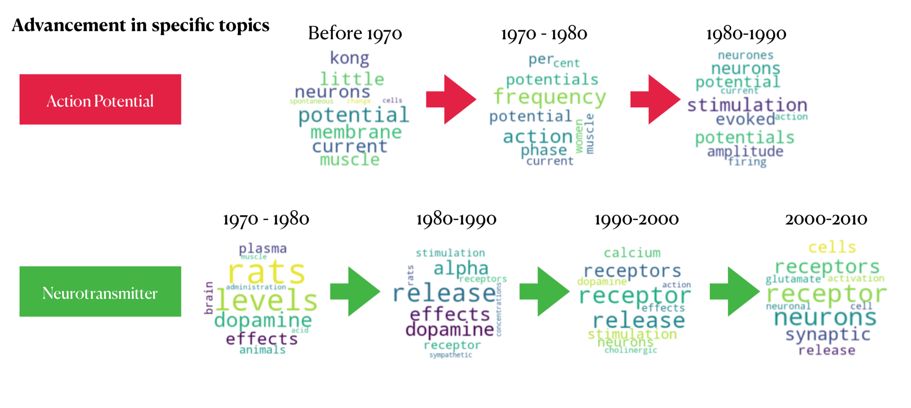
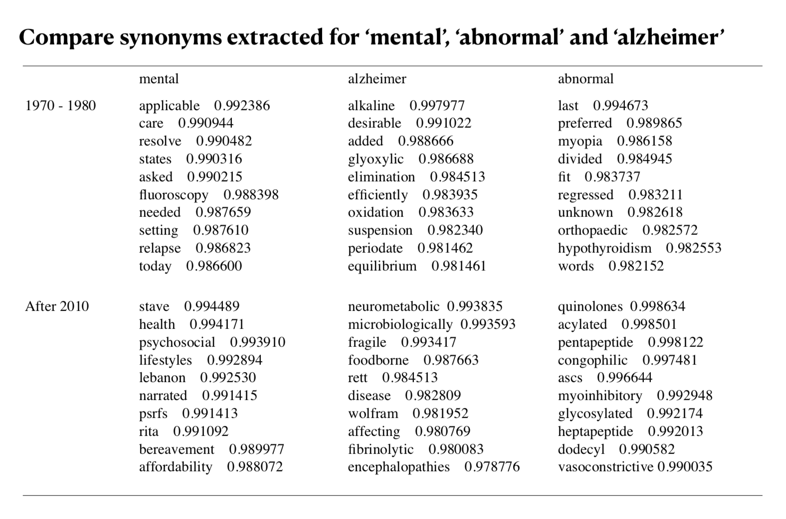
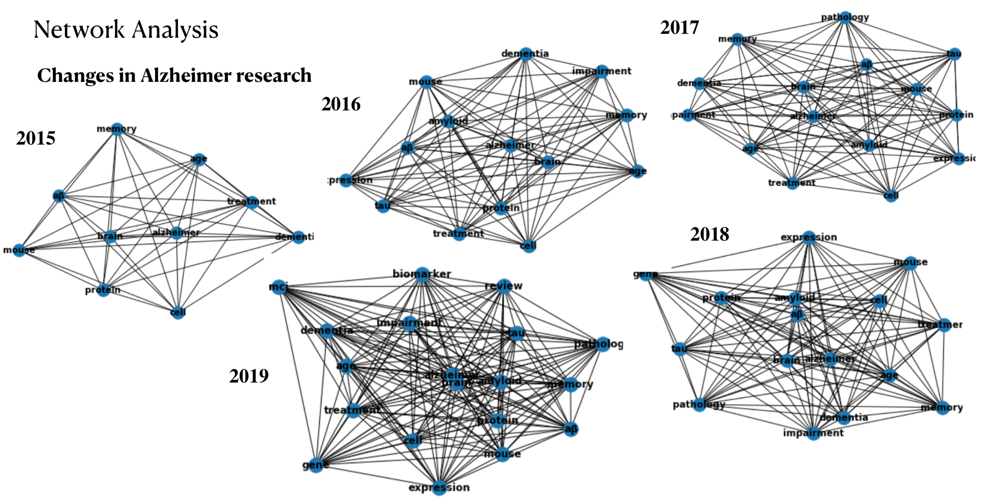
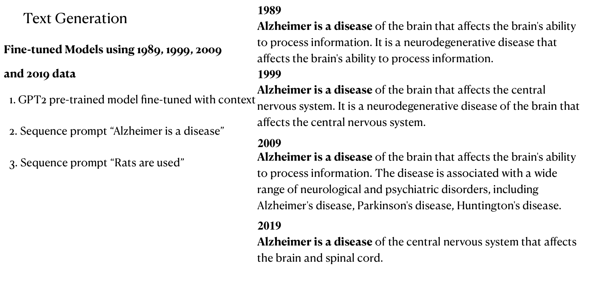
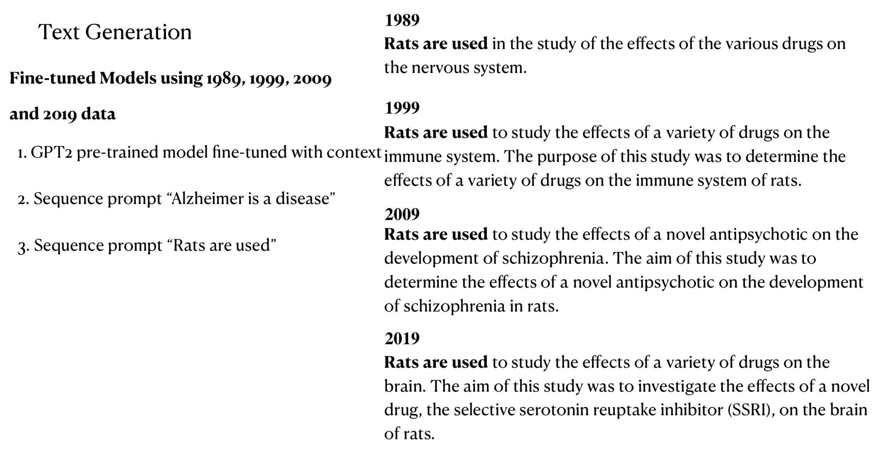

The wordcloud illustrates the key words on 2 topics: Action Potential and Neurotransmitter.
When we link the visualization with history, we can find that the history is well-represented here.
In 1970, Julius Axelrod, Bernard Katz and Ulf von Euler were awarded the Nobel Prize for their
work on neurotransmitters (Shafrir, 1994). We do see in our model that in 1970, one of topics extracted is
related with neurotransmitters in rats (‘dopamine’, ‘rat’, ‘level’). In 1980, a more clearly defined topic for
neurotransmitter appeared that included words such as ‘release’, ‘receptor’, and ‘simulation’, as well as
‘dopamine’ and ‘rats’. With the 1990-2000 model, a new word appeared in the the neurotransmitter topic
cluster—‘calcium’. It was exactly in 1991 that Erwin Neher and Bert Sakmann were awarded the Nobel
Prize for their work on single ion channels (Neher & Sakmann, 1991), in which calcium ions were one of
the main ions studied. While Nobel Prize studies do not necessarily represent the exact research focus of
that decade, they are definitely accurate benchmark for general research trends. These evidences support
the validity of our model in that the topics extracted accurately matched with real world research
development across time.
written report

Use word embedding to visualize how the synonyms for "mental", "abnormal" and "alzheimer" evolve over the past decades.

Abstracts from 2015 to 2019 have an increasing number of words that meet
the threshold. This indicates a growing interest in the research related to Alzheimer disease. Specifically,
the word “tau” does not appear in the 2015 graph and locates at the far ends of the graphs from 2016 to
2018, but moves considerably closer to “Alzheimer” in 2019. According to the research development of
Alzheimer disease, researchers in 2016 published an article named “A Novel Alzheimer Disease Locus
Located near the Gene Encoding Tau Protein” on Nature. This paper revealed association between
microtubule-associated protein tau (MAPT) and early onset of Alzheimer disease, which sparked a large
volume of following research endeavors (Jun et al., 2016). In December 2018, another paper on Nature
titled “Tau Impairs Neural Circuits, Dominating Amyloid-β effects, in Alzheimer Models in Vivo”
enlightened the underlying mechanisms between Amyloid-β and tau and suggested a larger role of tau
than previously expected (Busche et al., 2019). The greater influence of tau is reflected on its relative
position to “Alzheimer” and “aβ” on the graph of 2019. Tau is closer to both of the words in 2019 than
the previous years. “Biomarker” and “mci” made their first appearance on 2019’s graph. As the research
on the causes and indicators of Alzheimer disease develops, there have been an increasing volume of
discussions on detecting biomarkers for Alzheimer disease. This marks a transition from grasping the
fundamental causes of Alzheimer disease to utilizing the risk factors we know (amyloid-β, tau) to predict,
control and eventually cure the disease.

Fine-tune the state-of-the-art GPT2 model with the abstract data to produce zero-shot text generation.
GPT-2, launched by OpenAI in 2019, is capable of generating human-like text in any context without
task-specific training. According to OpenAI, the model is “chameleon-like”, as it can adapt to the writing
style and content of the input.
For the input “Alzheimer is a disease”, the original output gives 3 pieces of information: some statistics
for the commonality of Alzheimer disease, its cause and its effect. This output seems to greatly resemble
common knowledge. On the other hand, for the context-trained output, the use of words is more
professional and specific.
We found that the text
moves from general to specific information. For example, the model using 1989 data describes Alzheimer
disease as “affects the brain’s ability to process information” and the later models add domain-specific
nouns such as central nervous system, associated disorders and so on.

Similar pattern can be found for the
“Rats are used” sequence. From the 1989 model, the output only generally describes the use of rats in
drug studies. The 1999 model specifies that it is for the immune system, the 2009 model identifies the
drug as a new antipsychotic for schizophrenia and the 2019 model made clear the name of the drug. This
trend suggests that neuroscience research has been developing to uncover more granular details on
general concepts.

You can find more insights in the written report!